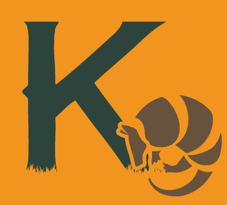

Upcoming Conference

K-CAP 2017
Ninth International Conference on Knowledge Capture
4th - 6th December, 2017
Austin, TX
Previous K-CAP Conferences
K-CAP 2015
Eighth International Conference on Knowledge Capture
October, 2015
Palisades, NY
K-CAP 2013
Seventh International Conference on Knowledge Capture
Jun. 23-26, 2013
Banff, Alberta
K-CAP 2011
Sixth International Conference on Knowledge Capture
Jun. 25-29, 2011
Banff, Alberta
K-CAP 2009
Fifth International Conference on Knowledge Capture
Sep. 1-4, 2009
Redondo Beach, CA
K-CAP 2007
Fourth International Conference on Knowledge Capture
Oct. 28-31, 2007
Whistler, BC
K-CAP 2005
Third International Conference on Knowledge Capture
Oct. 23-25, 2005
Banff, Alberta
K-CAP 2003
Second International Conference on Knowledge Capture
Oct. 23-25, 2003
Florida, USA
K-CAP 2001
First International Conference on Knowledge Capture
Oct. 21-23, 2001
Victoria, B.C, Canada
Motivation for the K-CAP conference series
The K-CAP conference series is sponsored by
the Association for Computing Machinery's
Special Interest Group on Artificial Intelligence
For more information about k-cap.org, send email to
info@k-cap.org